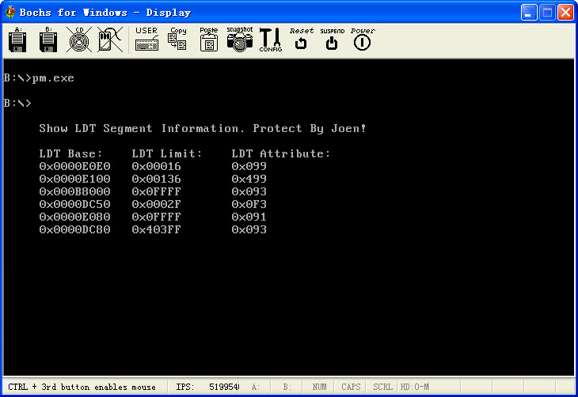

保护模式3:任务内无特权级转移
文章目录
在前面那篇文章中已经有从16位代码到32位代码的转换, 其实那就是任务内无特权级转换, 那么对于控制转移还没有特别提到. 这篇和下一篇就专门讲控制转移的…
代码实现逻辑: 首先在dos下初始化GDT和LDT表, 然后装载GDTR, 从实模式切换到保护模式,当然是关中断的.. 转移到保护模式后, 就装在LDTR, 装在堆栈. 装载各个选择子.. 都是指向LDT中的.. 描述符.. GDT只有进入和返回用到..然后在gdt中利用jmp指令转移到LDT中的一个16位段, 在16位段显示了一个字符串.. 然后就跳到LDT中的32位段. 大部分工作都在LDT的32位段中搞的..
原来写代码一直比较倾向于MASM9. 这里如果我们跳到32位段以后. 只要自己不切换段, 那么写代码就和Win32没有什么区别了, 只是没有那么多API给调用. 全部自己搞..
在这个32位段中做的事情说起来也很简单, 就是显示所有LDT局部描述符表中的描述符.. 我总共定义了6个段. 显示这6个段的基址偏远. 和属性. 只是代码有点多了. 逻辑倒是比较简单!
因为代码中我们要把LDT当成数据段来访问. 所以想要访问LDT, 或者GDT那么必须使用别名技术.
因为没有办法把系统段描述符的选择子装载到段寄存器的.
有图有真相, 下面这个截图就是在Bochs中跑起来的样子, 是不是很有成就感啊.. 呵呵搞定这个LDT和转移, 就可以开始向调用门什么的开始进军了.. 太暴力了!! 还是上代码吧.. 当然惯例. 贴一个下载地址..
http://www.joenchen.com/JoenTools/Protect3.rar

;============================================================================ ;使用jmp, Call实现任务内无特权级变换实例(使用了LDT) ;编译选项请参见 makefile TAB = 8 ;============================================================================ .686p Include pm.inc option casemap:none
Stack_Len equ 1024 ;堆栈大小 ;============================================================================ ;全局描述符 GdtDataSeg Segment use16 GDT label byte ;全局描述符表 Dummy: Descriptor 0, 0, 0 ;空的描述符 ;—————————————————————————- ; ;段基址 ;段界限 ;属性 Normal: Descriptor 0, 0ffffh, DA_DRW ;规范段描述符 g_Code16Desc: Descriptor 0, 0ffffh, DA_C ;非一致代码段16位 g_LdtTable: Descriptor 0, LdtLen-1, DA_LDT ;局部描述符表段的描述符
GDTLen equ $ - GDT ;GDT长度 GDT_Ptr word GDTLen-1 ;VGDT dword 0 ;—————————————————————————- NormalSelector equ Normal - GDT ;规范段选择子 Code16Selector equ g_Code16Desc - GDT ;代码段选择子 LdtSelector equ g_LdtTable - GDT ;LDT段的选择子 ;—————————————————————————- _RegSp word ? ;用于保存SS:SP _RegSs word ? GdtDataSeg Ends ;============================================================================ LdtDataSeg Segment use16 ;局部描述符表 LDT label byte ;段基址 ;段界限 ;属性 L_Code16Desc: Descriptor 0, L_Code16SegLen, DA_C ;非一致代码段16位 L_Code32Desc: Descriptor 0, L_Code32SegLen, DA_C + DA_32 ;非一致代码段32位 L_VideoDesc: Descriptor 0b8000h, 0ffffh, DA_DRW ;显存段(可读写) L_AliasDesc: Descriptor 0, LdtLen-1,DA_DRW or DA_DPL3;LDT别名段(可读写, 别名技术) L_DataDesc: Descriptor 0, 0ffffh, DA_DR ;数据段, 可读 L_StackDesc: Descriptor 0, Stack_Len-1, DA_DRW ;堆栈段
LdtLen = $ - LDT LdtCount = ( $ - LDT ) / 8 ;LDT描述符数量除以8是因为一个描述符8字节 ;—————————————————————————- L_Code16Selector equ L_Code16Desc - LDT + SA_TIL ;LDT16位代码段选择子这里需要+4表示TI位为1 L_Code32Selector equ L_Code32Desc - LDT + SA_TIL ;LDT32位代码段 L_VideoSelector equ L_VideoDesc - LDT + SA_TIL ;LDT视频段选择子 L_AliasSelector equ L_AliasDesc - LDT + SA_TIL + SA_RPL3 ;LDT别名数据段, 3环可访问 L_DataSelector equ L_DataDesc - LDT + SA_TIL ;LDT数据段选择子 L_StackSelector equ L_StackDesc - LDT + SA_TIL ;LDT堆栈段选择子 ;—————————————————————————- LdtDataSeg Ends
;—————————————————————————- L_StackSeg Segment use16 ;保护模式下的堆栈 byte Stack_Len dup(0) L_StackSeg Ends ;—————————————————————————- L_DataSeg Segment use16 ;16位数据段 SzPrompt byte "Show LDT Segment Information. Protect By Joen!", 0 SzBase byte "LDT Base: ", "LDT Limit: ", "LDT Attribute: ", 0 L_DataSeg Ends ;============================================================================ ;局部描述符中的16位段 ;============================================================================ L_Code16Seg Segment use16
_ShowMessage Proc far uses bx si ;显示一条信息
lea si, SzPrompt
mov di, 5\*80\*2+5\*2 ;5行5列
mov cx, sizeof SzPrompt
cld
;—————————————————————————- ;显示一条提示信息 @@: lodsb mov ah, 07h ;属性 stosw loop @b
ret
_ShowMessage Endp
L_Code16SegLen = $ - L_Code16Seg ;段长度 L_Code16Seg Ends
;============================================================================ ;局部描述符中的32位段 ;============================================================================ L_Code32Seg Segment use32
;;将al中的数字转成ASCII加上显示属性并在EAX中返回 _HexToAscii Proc uses ebx
mov bl, al
and al, 0fh
add al, 90h
daa
adc al, 40h
daa
mov ah, 7h
shl eax, 16 ;转换低位
mov al, bl
shr al, 4
and al, 0fh
add al, 90h
daa
adc al, 40h ;将高位转成ASCII
daa
mov ah, 07h ;属性
ret
_HexToAscii Endp ;============================================================================ ;换行, _dwValue传递当前的行列号, 计算好在Eax中返回下一行开始 ;============================================================================ _PrintLn Proc uses ebx _dwValue:dword mov eax, _dwValue mov bl, 160 div bl and eax, 0FFh inc eax mov bl, 160 mul bl ret _PrintLn Endp ;============================================================================ ;显示一条信息_lpStr:字符串首地址 ;_dwXY开始显示地址 ;============================================================================ _PrintMessage Proc uses esi edi _lpStr:dword, _dwXY:dword
mov esi, \_lpStr
xor ecx, ecx
;—————————————————————————- @@: mov al, byte ptr ds:[esi] inc esi inc ecx or al, al jnz @b ;ecx == 字符串长度 dec ecx ;—————————————————————————- mov esi, _lpStr mov edi, _dwXY @@: lodsb mov ah, 07h ;属性 stosw loop @b ret _PrintMessage Endp
_PrintLdt Proc far
lea eax, SzBase
Invoke \_PrintMessage, eax, 7\*80\*2+5\*2 ;第7行5列打印一个字符串
;—————————————————————————- ;循环遍历所有的ldt表项 xor esi, esi xor ebx, ebx
Invoke \_PrintLn, 7\*80\*2+5\*2 ;换行
mov edi, eax
add edi, 5 \* 2 ;从第5行开始显示
;—————————————————————————- ;打印基址 @@: mov al, 'x' mov ah, 07h ;打印Ox shl eax, 16 mov al, '0' mov ah, 07h stosd
mov al, byte ptr fs:\[esi+7\] ;基址bit4
call \_HexToAscii
stosd
mov al, byte ptr fs:\[esi+4\] ;基址bit2
call \_HexToAscii
stosd
mov al, byte ptr fs:\[esi+3\] ;基址bit1
call \_HexToAscii
stosd
mov al, byte ptr fs:\[esi+2\] ;基址bit0
call \_HexToAscii
stosd
;—————————————————————————- ;转换限长 add edi, 3 * 2 ;再过来5个格子 mov al, 'x' mov ah, 07h ;打印Ox shl eax, 16 mov al, '0' mov ah, 07h stosd
mov al, byte ptr fs:\[esi+6\] ;基址的高4位
and al, 0fh
call \_HexToAscii
shr eax, 16
stosw
mov al, byte ptr fs:\[esi+1\] ;限长高位
call \_HexToAscii
stosd
mov al, byte ptr fs:\[esi\] ;限长低位
call \_HexToAscii
stosd
;—————————————————————————- ;转换属性 add edi, 7 * 2 ;再过来7个格子 mov al, 'x' mov ah, 07h ;打印Ox shl eax, 16 mov al, '0' mov ah, 07h stosd
mov al, byte ptr fs:\[esi+6\]
shr al, 4
call \_HexToAscii ;转换属性高位
shr eax, 16
stosw
mov al, byte ptr fs:\[esi+5\] ;转换属性低位
call \_HexToAscii
stosd
;—————————————————————————- Invoke _PrintLn, edi mov edi, eax ;再换行 add edi, 5 * 2 ;从第5行开始显示 add esi, 8 ;描述符的大小 inc ebx ;—————————————————————————- cmp ebx, LdtCount ;遍历完所有的LDT描述符么? jb @b Jmp32 g_Code16Desc, _LdtRet ;32位段->16位段
_PrintLdt Endp
L_Code32SegLen = $ - L_Code32Seg ;段长度 L_Code32Seg_Entry= _PrintLdt - L_Code32Seg ;定义段内入口 L_Code32Seg Ends
;============================================================================ ;16位段, 由实模式跳入 ;============================================================================ g_Code16Seg Segment use16
_Entry: ;—————————————————————————- mov ax, LdtSelector lldt ax ;装载ldt
mov ax, L\_StackSelector
mov ss, ax
mov sp, Stack\_Len ;初始化堆栈
mov ax, L\_DataSelector
mov ds, ax ;初始化数据段
mov ax, L\_VideoSelector
mov es, ax ;es-->视频段
mov ax, L\_AliasSelector
mov fs, ax ;fs-->Ldt别名段
;CALLLDT中的16位段
CALL16 L\_Code16Selector, < \_ShowMessage > ;显示一个字符串
;16位段->32位段
Jmp16 L\_Code32Selector, < L\_Code32Seg\_Entry > ;打印LDT段信息
;—————————————————————————- ;准备退回实模式 _LdtRet:mov ax, NormalSelector mov fs, ax ;规范选择子 mov es, ax mov ds, ax mov ss, ax
mov eax, cr0 ;关PE位, 进入实模式
and al, 0feh
mov cr0, eax
;刷新段选择子缓冲区, 退回实模式
Jmp16 <seg StartCode >, < offset \_RetProtect >
g_Code16Seg Ends ;============================================================================ ;这里是代码入口, 由此跳入保护模式 ;============================================================================ StartCode Segment use16 _InitGdt Proc uses es ;初始化全局描述符表
xor eax, eax
mov ax, GdtDataSeg
mov es, ax ;es-->全局描述符表
;—————————————————————————- shl eax, 4 add eax, offset GDT mov dword ptr es:[GDT_Ptr+2], eax ;初始化VGDT描述符 ;—————————————————————————- mov ax, g_Code16Seg ;初始化十六位的代码段 shl eax, 4 mov word ptr es:[g_Code16Desc+2], ax ;段基址低位 shr eax, 16 mov byte ptr es:[g_Code16Desc+4], al ;段基址高地址低位 mov byte ptr es:[g_Code16Desc+7], ah ;段基址高地址高位 ;—————————————————————————- mov ax, LdtDataSeg ;初始化LDT描述符 shl eax, 4 mov word ptr es:[g_LdtTable+2], ax ;段基址低位 shr eax, 16 mov byte ptr es:[g_LdtTable+4], al ;段基址高地址低位 mov byte ptr es:[g_LdtTable+7], ah ;段基址高地址高位 ;—————————————————————————- lgdt fword ptr es:[GDT_Ptr] ;装载GDT ret _InitGdt Endp ;—————————————————————————- _InitLdt Proc ;初始化局部描述符
xor eax, eax
mov ax, LdtDataSeg ;es-->局部描述符表
mov es, ax
;—————————————————————————- mov ax, L_Code16Seg ;初始化LGT中的16位代码段 shl eax, 4 mov word ptr es:[L_Code16Desc+2], ax ;段基址的低地址 shr eax, 16 mov byte ptr es:[L_Code16Desc+4], al ;段基址高地址低位 mov byte ptr es:[L_Code16Desc+7], ah ;段基址的高地址高位 ;—————————————————————————- mov ax, L_Code32Seg ;初始化LGT中的32位代码段 shl eax, 4 mov word ptr es:[L_Code32Desc+2], ax shr eax, 16 mov byte ptr es:[L_Code32Desc+4], al mov byte ptr es:[L_Code32Desc+7], ah ;—————————————————————————- mov ax, L_DataSeg ;初始化LGT中的16位只读数据段 shl eax, 4 mov word ptr es:[L_DataDesc+2], ax shr eax, 16 mov byte ptr es:[L_DataDesc+4], al mov byte ptr es:[L_DataDesc+7], ah ;—————————————————————————- mov ax, LdtDataSeg ;初始化LGD的别名段 shl eax, 4 mov word ptr es:[L_AliasDesc+2], ax shr eax, 16 mov byte ptr es:[L_AliasDesc+4], al mov byte ptr es:[L_AliasDesc+7], ah ;—————————————————————————- mov ax, L_StackSeg ;初始化LGT中的16位可读写堆栈段 shl eax, 4 mov word ptr es:[L_StackDesc+2], ax shr eax, 16 mov byte ptr es:[L_StackDesc+4], al mov byte ptr es:[L_StackDesc+7], ah ;—————————————————————————- ret _InitLdt Endp Jmain Proc ;程序入口
call \_InitGdt ;初始化全局描述符表
call \_InitLdt ;初始化局部描述符表
mov ax, GdtDataSeg
mov ds, ax
push ss
pop ds:\[\_RegSs\]
push sp
pop ds:\[\_RegSp\] ;保存SS:SP
cli
\_EnableA20 ;关中断开A20地址线
mov eax, cr0
or eax, 1
mov cr0, eax ;开启分段, 进入保护模式
;—————————————————————————- Jmp16 Code16Selector, <offset _Entry> _RetProtect:: ;退回保护模式 ;—————————————————————————- mov ax, GdtDataSeg mov ds, ax mov ax, ds:[ _RegSs ] ;恢复SS:SP mov ss, ax mov ax, ds:[ _RegSp ] mov sp, ax
\_DisableA20 ;关A20地址线, 开中断
sti
mov ax, 4c00h
int 21h
Jmain Endp StartCode Ends End Jmain
文章作者 忆杰
上次更新 2011-09-14